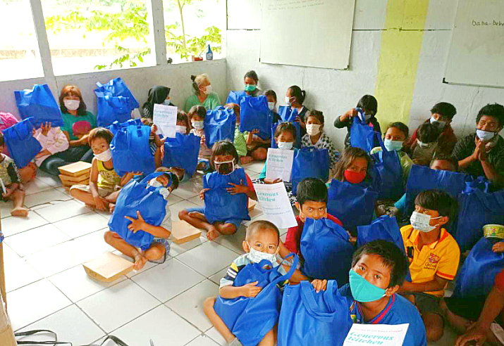

Generous Kitchen is achieving more with our initiatives than ever before. We work on many exciting projects to help improve the lives of others, and are very proud of the progress we continue to make. We have partnered with local food kitchens and companies to distribute resources that vary from sanitary products to nonperishables for those who are in need.
Generous Kitchen is a student-led initiative that focuses on providing food to all who are in need throughout Indonesia. We also aim to bring awareness to child malnutrition and the importance of food in a hunger-driven world.
If you would like to help support us in our goal of helping future generations and fighting hunger, please consider volunteering and applying to a leadership position or as part of our team. These roles vary from helping us deliver goods to malnourished children to writing publications for our blog. We will provide certificates as proof of your volunteer service upon request.